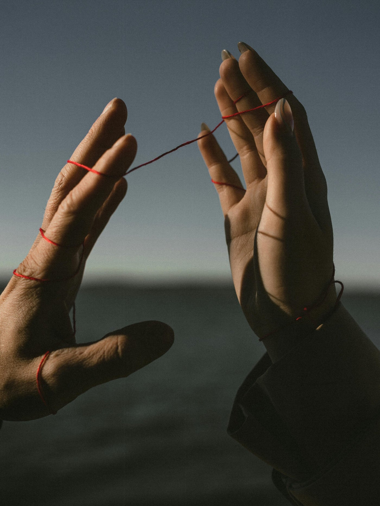
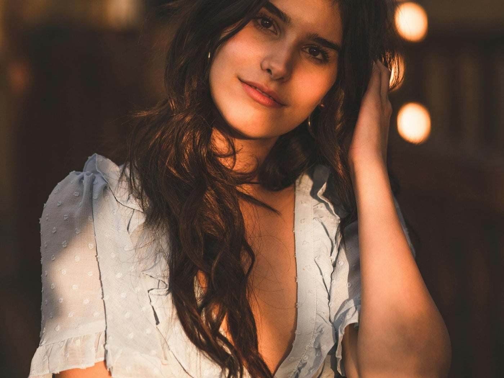
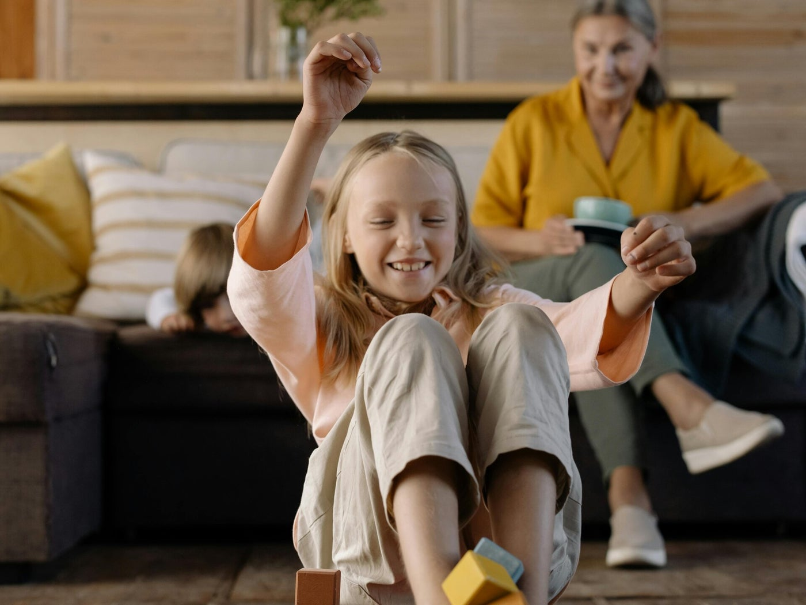
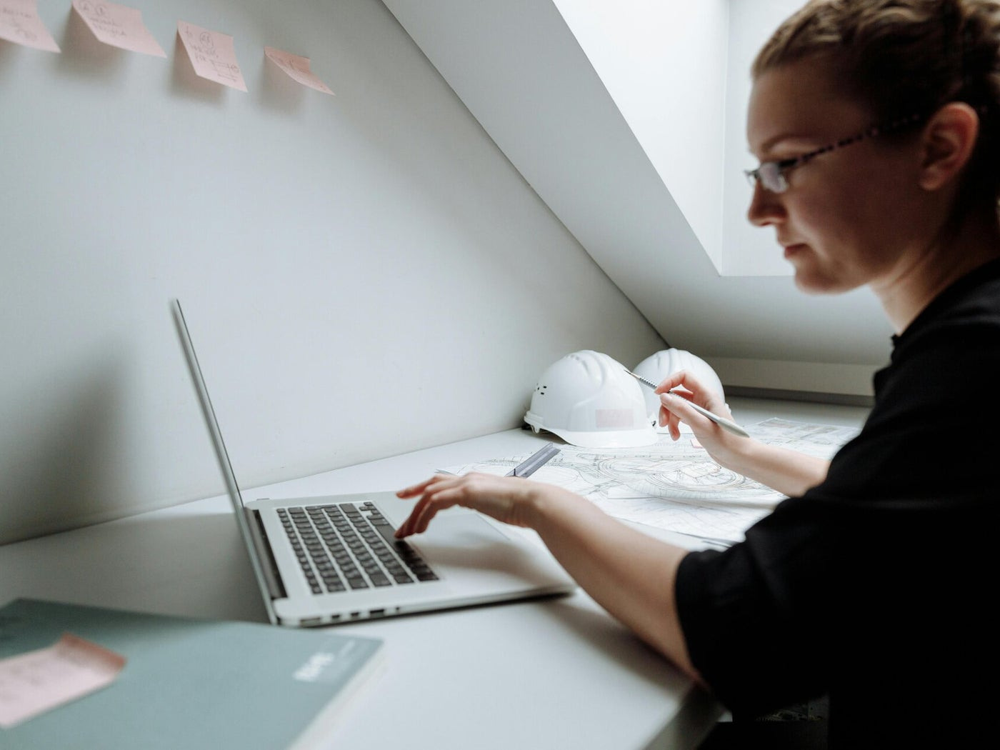
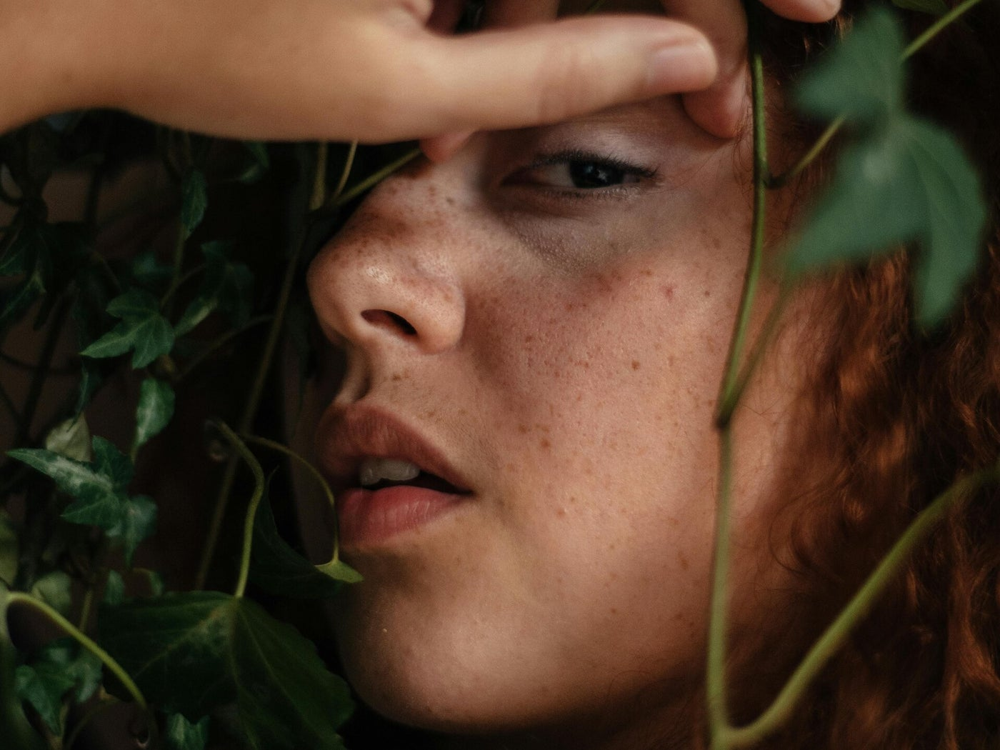
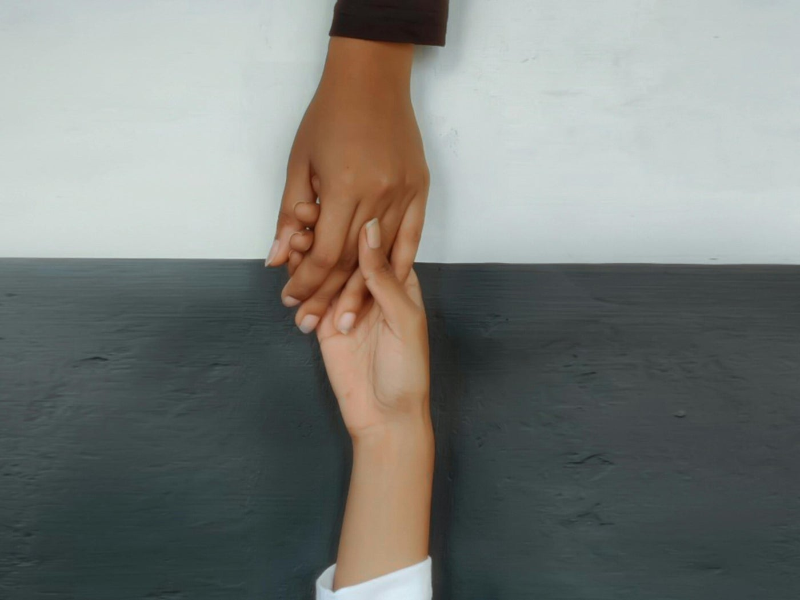

Jouw sprankel herontdekken
Bij Sprankel creëer ik veilige, warme ruimtes waar je opnieuw verbinding kunt maken met jezelf en met anderen.
Via beweging, lichaamsbewustzijn en spel nodig ik je uit om opnieuw thuis te komen bij jezelf, meer verbinding te ervaren met de mensen die je lief zijn en ruimte te maken voor rust, speelsheid en levensvreugde.
Een uniek aanbod
Sprankel is mijn uitnodiging aan jou om te vertragen, om te voelen en opnieuw te spelen.
Ik geloof dat we allemaal nood hebben aan een plek waar niets moet, waar je mag bewegen, voelen, spelen en gewoon zijn.
Ik creëer warme en veilige workshops waar beweging, lichaamsbewustzijn en spel mensen dichter bij zichzelf én bij elkaar brengen. Een plek waar niets moet en waar je even mag loskomen van de drukte van alledag.
Geen vaste methode of prestatie, maar een warme ervaring waarin veiligheid, verbinding en beleving centraal staan.
Een uitnodiging om opnieuw thuis te komen bij jezelf, elkaar écht te ontmoeten en de sprankel die al in jou aanwezig is weer ruimte te geven.
Ontdek hieronder de diverse mogelijkheden.

Voor vrouwen
Gun jezelf een moment om te vertragen en opnieuw thuis te komen in je lichaam. Via beweging, spel en zachtheid maak je ruimte voor rust, levensvreugde en de sprankel die al in jou aanwezig is.

Voor ouders en kinderen
Verlang je naar meer échte verbinding met je kind? Ontdek hoe beweging, spel en onverdeelde aandacht jullie dichter bij elkaar brengen en mooie herinneringen creëren die blijven nazinderen.

Voor ondernemers en hulpverleners
Voel je dat je voortdurend 'aan' staat? Creëer opnieuw ruimte om te vertragen, te voelen en vanuit meer rust, authenticiteit en veerkracht in je werk en leven te staan
Wat je mag ervaren
Mijn diepste wens is dat je met een warm hart naar huis gaat.
Dat je nog lang nadien een glimlach met je meedraagt en voelt hoe de drukte van alledag even naar de achtergrond is verdwenen.
Dat je helemaal aanwezig mocht zijn in het moment.
Dat je opnieuw verwondering, speelsheid en echte verbinding hebt ervaren.
Verbinding met jezelf, met je lichaam, met je kind of met de mensen om je heen.
Ik hoop dat je weer contact maakt met de vrolijkheid, lichtheid en levensenergie die vaak verborgen raken onder to-do's, verwachtingen en de drukte van het leven. Dat je even ruimte mag voelen, thuiskomen in jezelf en voelen: dit ben ik.
En misschien wel het allermooiste… dat die sprankel in je ogen opnieuw zichtbaar wordt. Omdat je niet harder hebt moeten werken of beter je best hebt moeten doen, maar simpelweg de ruimte hebt gekregen om te zijn.

Transformatie voor vrouwen
Na een sessie voelen vrouwen zich weer gedragen, ervaren ze meer rust in hun zenuwstelsel en krijgen ze opnieuw vertrouwen in hun eigen lichaam en intuïtie. Het is een reis naar diepere zelfverbinding en een hernieuwd gevoel van innerlijke balans.
Verbinding voor ouders en kinderen
Ik hoop dat ouders en kinderen elkaar opnieuw écht ontmoeten. Niet vanuit moeten of presteren, maar vanuit spel, plezier, verwondering en oprechte verbinding. Creëer samen herinneringen die blijven nazinderen en leer elkaar met nieuwe ogen zien.
